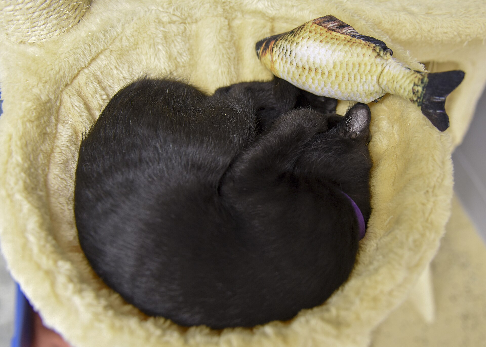

Ein seriöser Züchter ist kein Vermehrer. Trotzdem ist Zucht nicht das Ideal.
Die Seite ist grundsätzlich gegen zusätzliche Haustierproduktion. Nicht, weil jeder Züchter gleich schlecht ist, sondern weil bereits genug Tiere einen Platz brauchen.

Auf einen Blick
- Vermehrer produzieren Tiere als Ware: billig, schnell, oft ohne saubere Gesundheit, Herkunft und Nachbetreuung.
- Seriöse Züchter arbeiten transparenter, prüfen Gesundheit und geben Tiere nicht beliebig ab.
- Auch seriöse Zucht schafft aber neue Nachfrage nach neuen Tieren.
- Die konsequenteste Haltung dieser Seite bleibt: aufnehmen, was schon da ist.
Züchter und Vermehrer sind nicht dasselbe
Es wäre falsch, jeden Züchter mit einem Vermehrer gleichzusetzen. Seriöse Züchter kennen Abstammung, Alter, Gesundheitsstatus und Bedürfnisse ihrer Tiere. Sie prüfen Interessenten, dokumentieren, lassen untersuchen, beraten und nehmen ein Tier im Zweifel zurück. Das ist etwas anderes als „welchen blauen Wellensittich möchten Sie denn?“ ohne sichere Aussage zu Alter, Geschlecht, Gesundheit oder Herkunft.
| Merkmal | Seriöse Zucht | Vermehrung |
|---|---|---|
| Ziel | kontrollierte, dokumentierte Nachzucht mit Verantwortung | möglichst viele attraktive Tiere für schnelle Abgabe |
| Gesundheit | Untersuchungen, Ausschluss kranker Linien, Transparenz | oft unklar, lückenhaft oder egal |
| Abgabe | Beratung, Fragen, Wartezeit, Rücknahmebereitschaft | Farbe, Preis, schnelle Übergabe |
| Tierbild | Lebewesen mit langfristiger Verantwortung | Ware mit Optik und Preis |
Warum auch gute Zucht nicht unser Ideal ist
Die Unterscheidung ist wichtig, aber sie löst den Grundkonflikt nicht. Auch gute Zucht erzeugt neue Tiere für einen Markt, in dem Tierheime, Pflegestellen und private Notfälle bereits voll sind. Wer ein neues Tier bestellt, entscheidet sich nicht nur für dieses Tier. Er entscheidet sich auch gegen die Aufnahme eines vorhandenen Tieres.
Das heißt nicht, dass jeder einzelne Kauf moralisch identisch ist. Ein billiger Kleinanzeigenwelpe aus Vermehrung ist eine andere Liga als ein transparent arbeitender Züchter. Aber die Richtung bleibt: Je weniger Nachfrage nach neu produzierten Haustieren entsteht, desto weniger Tiere werden für menschliche Wünsche erzeugt.
„Ich will nur ein gesundes Tier.“
Das ist verständlich. Aber Gesundheit ist kein Argument für Vermehrer und kein Freibrief für Qualzuchtmerkmale.
Adoption ist kein Trostpreis.
Tierheime kennen viele Tiere gut und können oft ehrlicher einschätzen, welcher Alltag passt.
Woran Vermehrung oft zu erkennen ist
- mehrere Würfe oder viele Tierarten gleichzeitig
- unklare Herkunft, fehlende Gesundheitsnachweise oder Ausreden bei Besichtigung
- Abgabe nach Optik, Farbe, Niedlichkeit oder Preis
- kein echtes Interesse am zukünftigen Zuhause
- Druck: schnell entscheiden, sofort mitnehmen, „sonst ist er weg“
- Elterntiere nicht sichtbar oder leben in fragwürdigen Bedingungen
Was rechtlich wichtig ist
Bei gewerbsmäßiger Zucht, Handel, Ausbildung oder Haltung für Dritte kann nach § 11 Tierschutzgesetz eine Erlaubnis nötig sein. Das löst aber nicht jedes Problem: Hobbyzucht, Onlinehandel, Vollzug, Nachweise und Tierart-Unterschiede bleiben in der Praxis kompliziert. Für die Seite heißt das: Recht erklären, aber nicht so tun, als würde Recht automatisch Tierleid verhindern.
Grundsatz dieser Seite
Wir sind nicht für „bessere Tierproduktion“ als Endziel. Wir sind dafür, dass weniger Tiere produziert und mehr vorhandene Tiere verantwortlich aufgenommen werden.